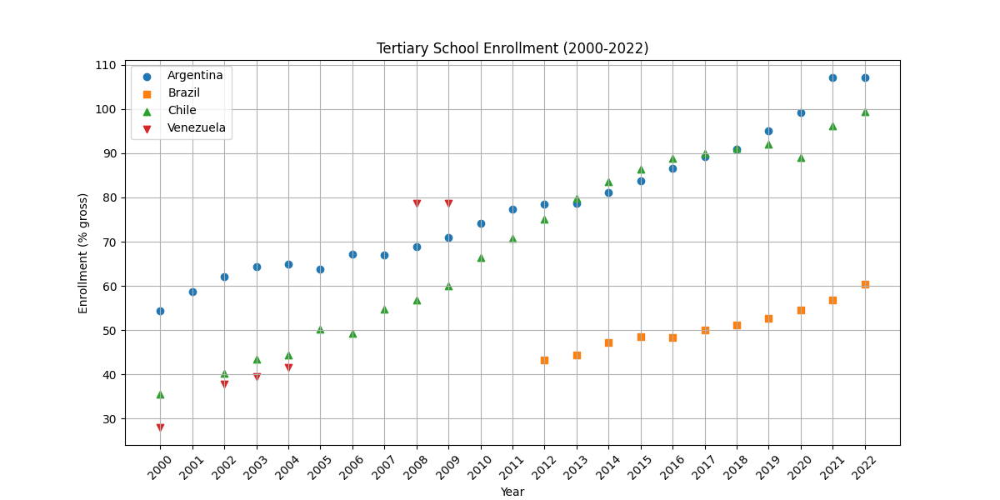

Project Report
Introduction
Access to education is a crucial driver of social and economic development. Over the past two decades, countries in Latin America have made significant efforts to expand educational opportunities at the primary, secondary, and tertiary levels. This project analyzes trends in school enrollment rates in four major Latin American countries — Brazil, Argentina, Chile, and Venezuela — over the course of the 21st century, with a focus on the period from 2000 to 2022. Using data from the World Bank’s World Development Indicators, accessed via the wbgapi Python package, we examine gross enrollment percentages at each educational stage.
Gross enrollment rates measure the total number of students enrolled in a given education level — regardless of age — as a percentage of the official school-age population for that level. Rates above 100% are possible and often reflect the presence of over-aged or under-aged students who have entered school early, repeated grades, or returned to education later in life. By tracking changes over time, gross enrollment rates offer insight into access, retention, and progression through the education system.
This analysis aims to identify overall trends, cross-country differences, and potential points of educational expansion or stagnation. Scatterplots for each country visualize enrollment patterns at each level of schooling. In the results section, we interpret these trends to better understand how educational participation has evolved across the region in the early 21st century.
Data Description
Data Analysis
Results and Discussion
In Argentina, gross enrollment rates across all education levels showed distinct trends between 2000 and 2022. Primary enrollment began at approximately 117% and experienced a gradual decline to 109% by 2022, though it remained consistently above 100% throughout the period. Secondary enrollment initially declined slightly from 97% to around 93% by 2007 but subsequently exhibited a strong upward trend, surpassing primary enrollment rates by 2021 and reaching approximately 115% by 2022. Tertiary enrollment, starting at 55% in 2000, demonstrated steady and sustained growth, with a particularly sharp increase after 2010, culminating at roughly 107% by 2022. These patterns suggest significant improvements in secondary and tertiary educational access over the 21st century, alongside a slight stabilization in primary-level participation.
In Brazil, gross enrollment data from 2012 to 2022 indicate relatively stable participation at the primary and secondary education levels, with primary enrollment fluctuating between 104% and 110%, and secondary enrollment steadily rising from approximately 94% to 106%. Tertiary enrollment started significantly lower, at around 43% in 2012, but experienced gradual growth over the decade, reaching approximately 60% by 2022. Unlike Argentina, Brazil’s tertiary enrollment expansion appears more moderate, though upward, suggesting steady but slower improvements in higher education access.
In Chile, gross enrollment rates from 2000 to 2022 reveal similar patterns to those observed in Argentina. Primary enrollment began at approximately 110% in 2000 and experienced a gradual decline, stabilizing at around 100% by 2022. Secondary enrollment showed consistent growth over the period, starting at 85% in 2000 and reaching nearly 110% by 2022. Tertiary enrollment exhibited the most significant increase, starting at 40% in 2000 and rising sharply to approximately 95% by 2022. These trends highlight substantial progress in secondary and tertiary education access, with primary enrollment stabilizing at high levels.
In Venezuela, gross enrollment rates from 2000 to 2022 show a slight decrease in primary school enrollment, starting at approximately 105% in 2000 and declining to around 100% by 2022. Secondary school enrollment, on the other hand, exhibited a modest increase, rising from about 70% in 2000 to nearly 80% by 2022. These trends suggest a stabilization in primary education participation and gradual improvement in access to secondary education over the observed period.

When comparing all four countries, one can observe that primary enrollment rates are relatively high and stable across the board, with slight declines over time. Secondary enrollment rates show significant growth in Argentina, Chile, and Brazil, while Venezuela exhibits more modest improvements. Tertiary enrollment demonstrates the most variation, with Argentina and Chile showing sharp increases, Brazil experiencing steady growth, and Venezuela lagging behind in higher education access. These trends highlight differing levels of progress and challenges in educational access across the four countries.
In secondary enrollment, all four countries exhibit upward trends over the observed period, though the magnitude of growth varies. Argentina and Chile show the most significant increases, with secondary enrollment rates surpassing 100% by 2022. Brazil also demonstrates steady growth, reaching similar levels by the end of the period. Venezuela, however, lags behind, with secondary enrollment rates remaining below 80% in 2022. These differences highlight varying levels of progress in expanding access to secondary education across the countries.

Though the data is less consistent for tertiary enrollment, there is a strong upward trend in Argentina, Chile, and Brazil, with Argentina and Chile showing the most significant increases. Brazil demonstrates steady growth, albeit at a slower pace, while Venezuela lags significantly behind the other three countries. These patterns suggest that while progress has been made in expanding access to tertiary education, disparities remain, particularly for Venezuela. The data underscores the need for targeted policies to address these gaps and promote equitable access to higher education across the region.